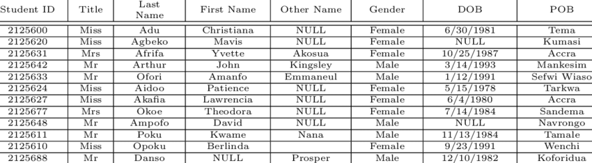

The question that has been asked before my many people who are looking to get into programming and the world of Software Development.
To keep it simple, backend is everything that you don't see when using a device. It controls the databases and stores all of your info, it
keeps track of all your passwords and your stored info. Backend Developers provide the function to any technological device you'll ever use.
The main purpose of a Backend Developer is to build and maintain websites while ensuring the functionality of the webpage. Have you ever wondered
while scrolling through social media all of the posts and images you see are related to the content you enjoy most? This is done by a tool Backend Developers
use called 'Algorithms'. These algorithms collect data from different things such as how a user interacts with certain topics or their watch time on a certain video
and provides more content similar to those on your feed. Backend Development typically answers the question "How" when it comes to anything with a website,
if you were ever wondering 'How' the website was able to remember your passwords or 'How' the social media app knew which post to suggest next, backend development is
what answers all of those questions
Languages Used in Backend
Unlike Frontend where the languages are used to increase functionality and produce appealing products, the languages used in backend are used more for
Object Oriented Programming (OOP). OOP focused on organizing software around data and objects compared to logic and functions.
Seeing that OOP focuses more on data, it is no
surprise that languages used in backend are strong OOP languages. There are multiple languages that have a strong foundation in OOP such as Python, Java, C++, and PHP
Python is one of the most popular backend website because of its versatility and its simple to understand syntax. Python is home to thousands of libraries that help with
multiple manipulating things like databases, servers, etc. Python is the second highest in demand programming language due to its limitless possibilities.
When programmers think of Java, they think of OOP. Java is a programming languages that is well known for its OOP foundation. Apart from that, Java is also a very secure language
which uses public encryption keys to make data handling safer.
Different Aspects of Backend
Backend development is composed of multiple different parts that help it serve its purpose. There are databases, API's, servers, and many more.
Let's start with databases. A dataset in short, is a collection of information or data. Let's look at the notes app on your phone, you probably have some
information stored there like a grocery list, or a To-Do list; you can think of your notes app as a database that stores all of your data. If you were to scale
this analogy into bigger things like apps, websites, etc. you will understand how they work. Another example of a database is a library's computer. How does the librarian
know where each book is? Do they memorize its location of the top of their head? Of course not, the library uses a database to manage and locate where different books
go with respect to their category. The image to the right shows an example of a database that keeps track of student records

A database that contains student records
Another part of backend is API's. This is probably a term that sounds more unfamiliar to you so I will use analogies to try to explain it.
When you go to a restaurant how is the chef able to know what you want to order and how you like it even though you do not have direct access to the chef?
You talk to the server who relays your request to the chef. In this example, the server is an API. It takes information from one source and relays it to the other source.
This is done ALL the time in software and backend development. For example, things such as weather apps. It would be impossible to get information around the world for the temperatures,
thats why API's are used.
How To Get Started in Backend?
There are numerous ways to get started in Backend Development. If you are a complete beginner with little to no
previous coding experience, one of the best ways to get started is by attending college or university classes. In classes like these
you will find plenty of introductory programming classes that teach you the basics and fundamentals of computing. It is here will you will
grasp a greater understanding of how computers and software works. Here is a list of some Universities in Ontario that you could look into:
If you don't have the funds to necessarily attend one of those programs, there are multiple resources online that teach you to code and will
help you understand the fundamentals of backend development very easily. Here is a link to some free resources you can use:

 Seeing that OOP focuses more on data, it is no
surprise that languages used in backend are strong OOP languages. There are multiple languages that have a strong foundation in OOP such as Python, Java, C++, and PHP
Seeing that OOP focuses more on data, it is no
surprise that languages used in backend are strong OOP languages. There are multiple languages that have a strong foundation in OOP such as Python, Java, C++, and PHP